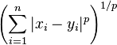

Odległość Minkowskiego to uogólniona miara odległości między punktami przestrzeni euklidesowej.

Można o niej myśleć jako o uogólnieniu odległości euklidesowej (p = 2), miejskiej (p = 1) oraz Czebyszewa (lim p → ∞)
p =
Źródło: Wikipedia
Autor: Tomasz Pewiński